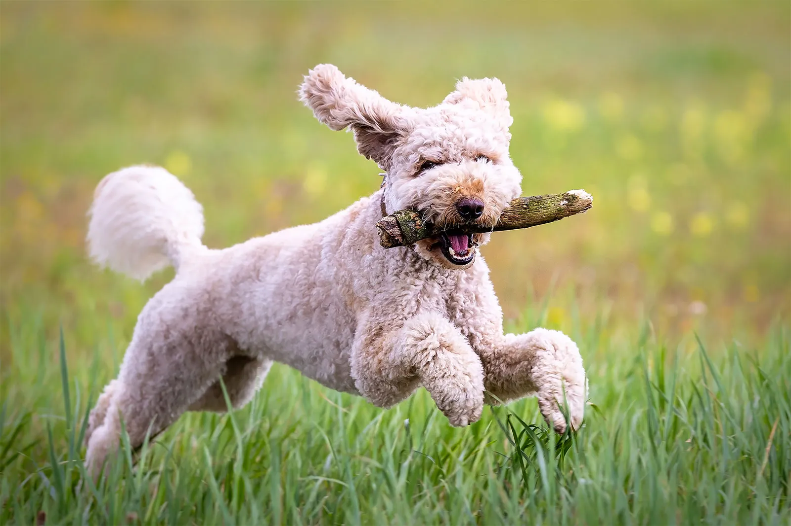
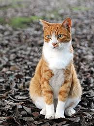

A dog is a four-legged, domesticated mammal widely known as "man's best friend" for its deep loyalty, companionship, and emotional connection to humans.

A domestic cat is a small, agile, carnivorous mammal known for its independent nature, sharp senses, and graceful movements.
